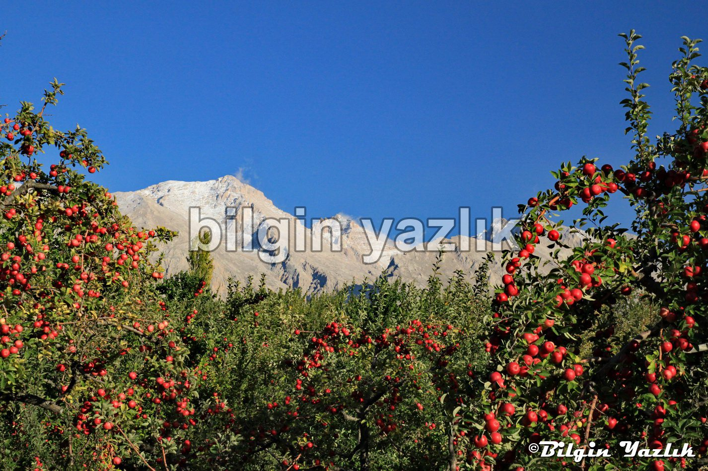
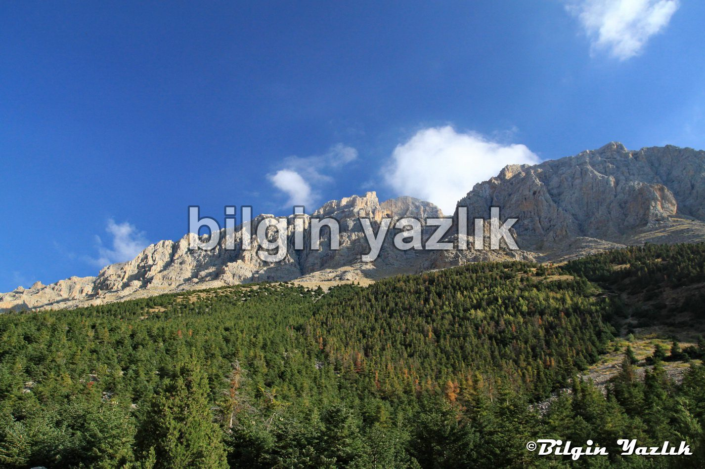
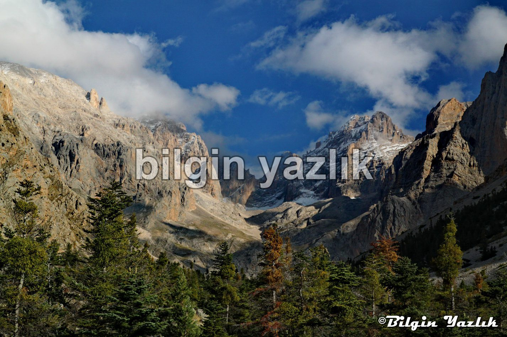
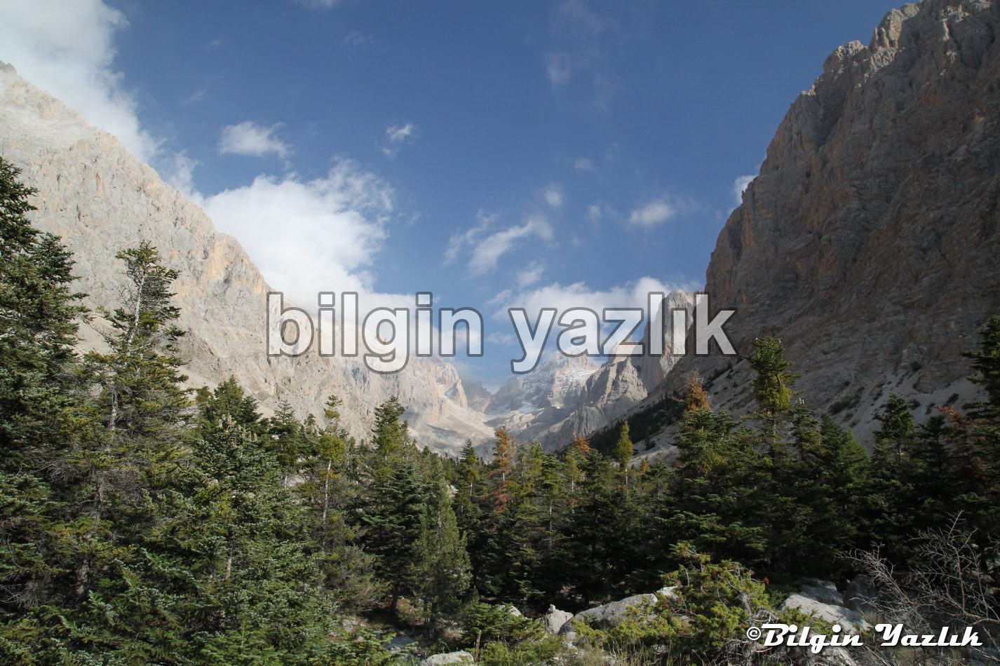
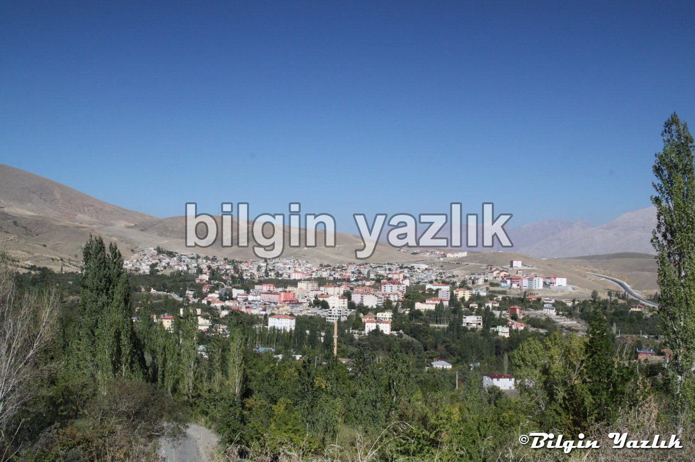
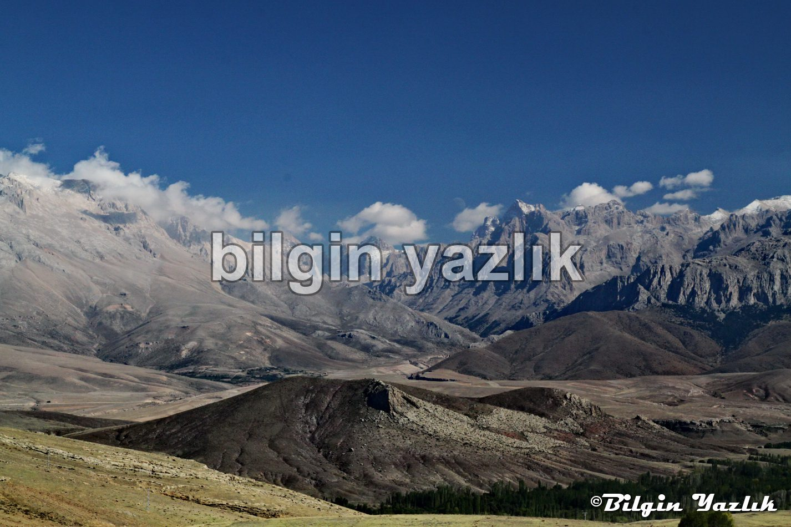
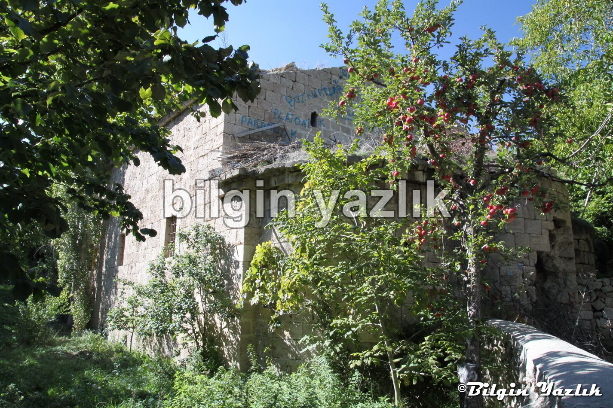
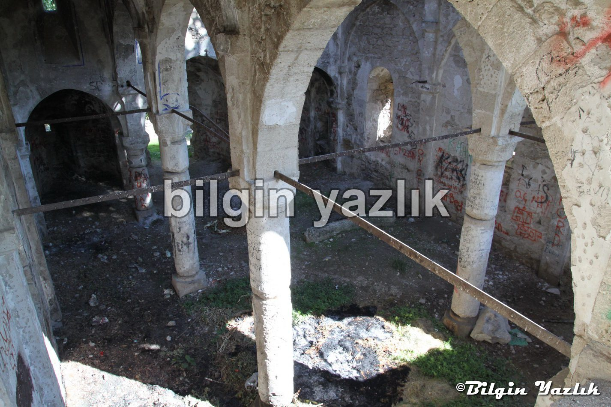
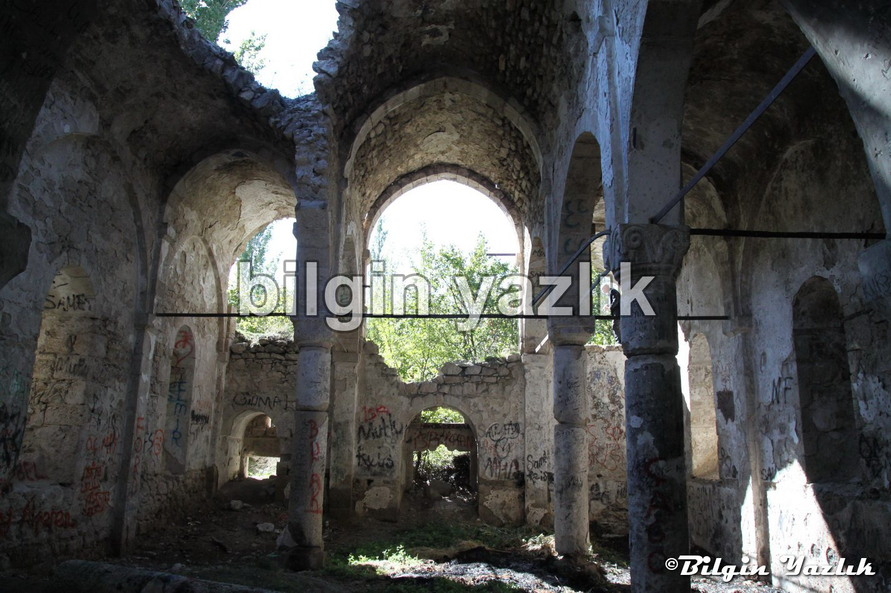
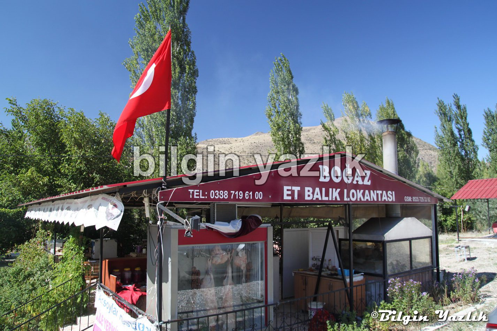

Çamardı
Niğde’nin sevimli ilçesi, Demirkazık dağı eteklerinde bir cennet bahçesi.
Aladağlar Milli Parkı’nın bir kapısı da burada bulunuyor.
Türkiye’nin en kaliteli Amasya elmaları buradan çıkıyor.
İlçede büyükçe bir kilise harabesi de bulunuyor.
Özellikle Adanalıların yazın en sıcak zamanında yayla niyetine kullandıkları bir bölgeye dönüşmüş durumda.
Demirkazık bütün heybeti ile Çamardına direk olmuş adeta, gökyüzü üstüne düşmesin diye.
Ecemiş ırmağı Çamardına can suyu oluyor, içindeki lezzetli alabalıklar ise boğazlara can oluyor.
Çamardı – Adana yolu üzerinde Boğaz alabalık restoranı bulunuyor, burada çok lezzetli alabalık ve sucuk bulunuyor.
Petek pastanesinden tatlı yemeden sakın geçmeyin, Türkiye’nin en kaliteli tatlı ustalarının memleketleri genelde Çamardı’dır.










Bu yazı taliyol arşivinden taşınmıştır. · özgün kayıt